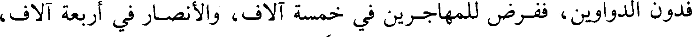
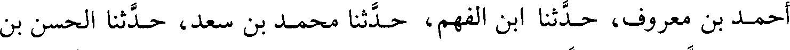
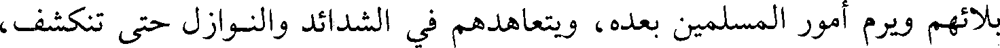
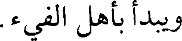
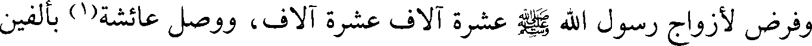
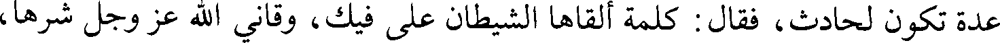

File: 000615.gt.txt (if the image is defective, simply delete all Arabic text and the line will be excluded)

وكان بين وقعة اليرموك والجسر أربعون ليلة، فكانت اليرموك في جمادى الآخرة،
File: 000616.gt.txt (if the image is defective, simply delete all Arabic text and the line will be excluded)
قصة البويب(1)
File: 000617.gt.txt (if the image is defective, simply delete all Arabic text and the line will be excluded)

والجسر في شعبان.
File: 000618.gt.txt (if the image is defective, simply delete all Arabic text and the line will be excluded)

ثم أن المثنى خرج في آثار القوم، فأسر منهم وقتل، وبعث إلى من يليه فاجتمع
File: 000619.gt.txt (if the image is defective, simply delete all Arabic text and the line will be excluded)

إليه جمع عظيم، فبلغ ذلك رستم والفيرزان، فبعثا إليه مهران الهمذاني، وبلغ المثنى
File: 000620.gt.txt (if the image is defective, simply delete all Arabic text and the line will be excluded)

[الخبر](2)، فجمع الناس بالبويب، فعبر مهران فنزل على شاطئ الفرات، فنادى
File: 000621.gt.txt (if the image is defective, simply delete all Arabic text and the line will be excluded)

المثنى في الناس : انهدوا لعدوكم، قم قال : إني مكبر ثلاثا فتهيأوا، ثم احملوا مع
File: 000622.gt.txt (if the image is defective, simply delete all Arabic text and the line will be excluded)

الرابعة.
File: 000623.gt.txt (if the image is defective, simply delete all Arabic text and the line will be excluded)

فلما كبر أول تكبيرة أعجلهم فارس فخالطوهم وركدت الحرب، وهزمت فارس،
File: 000624.gt.txt (if the image is defective, simply delete all Arabic text and the line will be excluded)

وهلك مهران، وتمكن المسلمون من الغارة على السواد فيما بينهم وبين دجلة،
File: 000625.gt.txt (if the image is defective, simply delete all Arabic text and the line will be excluded)

فدون الدواوين، ففرض للمهاجرين في خمسة آلاف، والأنصار في أربعة آلاف،
File: 000626.gt.txt (if the image is defective, simply delete all Arabic text and the line will be excluded)

وفرض لأزواج رسول الله صلعم في إثني عشر ألفا.
File: 000627.gt.txt (if the image is defective, simply delete all Arabic text and the line will be excluded)

أحمد بن معروف، حدثنا ابن الفهم، حدثنا محمد بن سعد، حدثنا الحسن بن
File: 000628.gt.txt (if the image is defective, simply delete all Arabic text and the line will be excluded)

موسى، حدثنا زهير، حدثنا أبوإسحاق](1)، عن مصعب بن سعد:
File: 000629.gt.txt (if the image is defective, simply delete all Arabic text and the line will be excluded)

أن عمر رضي الله عنه فرض لأهل بدر والمهاجرين والأنصار ستة آلاف ستة
File: 000630.gt.txt (if the image is defective, simply delete all Arabic text and the line will be excluded)

آلاف، وفرض لأزواج رسول الله صلعم، ففضل عليهن عائشة، ففرض لها في اثني عشر
File: 000631.gt.txt (if the image is defective, simply delete all Arabic text and the line will be excluded)

75/أ ألفا، ولسائرهن في عشرة آلاف غير جويرية وصفية، / فرض لهما في ستة آلاف،
File: 000632.gt.txt (if the image is defective, simply delete all Arabic text and the line will be excluded)

وفرض للمهاجرات الأول أسماء بنت عميس، وأسماء بنت أبي بكر، وأم عبد أم
File: 000633.gt.txt (if the image is defective, simply delete all Arabic text and the line will be excluded)

ابن مسعود ألفا ألفا.
File: 000634.gt.txt (if the image is defective, simply delete all Arabic text and the line will be excluded)

النقور، أخبرنا المخلص، أخبرنا أحمد بن عبد الله بن سيف، حدثنا السري بن يحيى،
File: 000635.gt.txt (if the image is defective, simply delete all Arabic text and the line will be excluded)

حدثنا شعيب، عن سيف](2)، عن محمد، والمهلب، وعمرو، وطلحة، وسعيد،
File: 000636.gt.txt (if the image is defective, simply delete all Arabic text and the line will be excluded)

لما فتح الله على المسلمين وقتل رستم، وقدمت على عمر رضي الله عنه فتوح من
File: 000637.gt.txt (if the image is defective, simply delete all Arabic text and the line will be excluded)

الشام، جمع المسلمين وقال :ما يحل للوالي من هذا المال؟(3) فقالوا :أما لخاصته فقوته
File: 000638.gt.txt (if the image is defective, simply delete all Arabic text and the line will be excluded)

وقوت عياله، لا وكس ولا شطط، وكسوته وكسوتهم للشتاء والصيف، ودابتان لجهاده
File: 000639.gt.txt (if the image is defective, simply delete all Arabic text and the line will be excluded)

وحوائجه وحملانه إلى حجه وعمرته والقسم بالسوية، وأن يعطي أهل البلاء على قدر
File: 000640.gt.txt (if the image is defective, simply delete all Arabic text and the line will be excluded)

بلائهم ويرم أمور المسلمين بعده، ويتعاهدهم في الشدائد والنوازل حتى تنكشف،
File: 000641.gt.txt (if the image is defective, simply delete all Arabic text and the line will be excluded)

ويبدأ بأهل الفيء.
File: 000642.gt.txt (if the image is defective, simply delete all Arabic text and the line will be excluded)

و [عن سيف، عن محمد بن عبد، وعبد الله بن عمر، عن نافع](4)، عن ابن
File: 000643.gt.txt (if the image is defective, simply delete all Arabic text and the line will be excluded)

عمر، قال:
File: 000644.gt.txt (if the image is defective, simply delete all Arabic text and the line will be excluded)

195
File: 000645.gt.txt (if the image is defective, simply delete all Arabic text and the line will be excluded)

ردف أولئك خمسين ومائتين، ولمن ردفهم مائتين، وكان آخر من فرض له أهل هجر
File: 000646.gt.txt (if the image is defective, simply delete all Arabic text and the line will be excluded)

على مائتين.
File: 000647.gt.txt (if the image is defective, simply delete all Arabic text and the line will be excluded)

وفرض لأزواج رسول الله صلعم عشرة آلاف عشرة آلاف، ووصل عائشة(1) بألفين
File: 000648.gt.txt (if the image is defective, simply delete all Arabic text and the line will be excluded)

فأبت، فقال : هذا بفضل منزلتك عند رسول الله صلعم، / فإذا أخذتيها فشأنك. 74/ب
File: 000649.gt.txt (if the image is defective, simply delete all Arabic text and the line will be excluded)

وجعل نساء أهل بدر على خمسمائة خمسمائة، ونساء ما بعد بدر إلى الحديبية
File: 000650.gt.txt (if the image is defective, simply delete all Arabic text and the line will be excluded)

على أربعمائة، ونساء ما بعد ذلك على ثلاثمائة، ونساء أهل القادسية مائتين. والصبيان
File: 000651.gt.txt (if the image is defective, simply delete all Arabic text and the line will be excluded)

من أهل بدر وغيرهم مائة. وقال قائل(2) : يا أمير المؤمنين، لو تركت في بيوت الأموال
File: 000652.gt.txt (if the image is defective, simply delete all Arabic text and the line will be excluded)

عدة تكون لحادث، فقال : كلمة ألقاها الشيطان على فيك، وقاني الله عز وجل شرها،
File: 000653.gt.txt (if the image is defective, simply delete all Arabic text and the line will be excluded)

وهي فتنة لمن بعدي، بل أعد لهم طاعة الله عز وجل وطاعة رسوله، فهما عدتنا التي
File: 000654.gt.txt (if the image is defective, simply delete all Arabic text and the line will be excluded)

أفضينا بها إلى ما ترون، فإذا كان هذا المال ثمن دين أحدكم هلكتم.
File: 000655.gt.txt (if the image is defective, simply delete all Arabic text and the line will be excluded)

محمد بن بشران، قال : أخبرنا ابن صفوان، قال : حدثنا أبو بكر القرشي، قال : حدثنا
File: 000656.gt.txt (if the image is defective, simply delete all Arabic text and the line will be excluded)

أبو خيثمة، قال : حدثنا يزيد بن هارون، عن محمد بن عمرو، عن أبي سلمة](3)، عن
File: 000657.gt.txt (if the image is defective, simply delete all Arabic text and the line will be excluded)

أبي هريرة :
File: 000658.gt.txt (if the image is defective, simply delete all Arabic text and the line will be excluded)

أنه قدم على عمر رضي الله عنه من البحرين؛ قال : فغدوت عليه فصليت العشاء
File: 000659.gt.txt (if the image is defective, simply delete all Arabic text and the line will be excluded)

معه(4)، فلما رآني سلمت عليه، فقال : ما قدمت به؟ قلت : قدمت بخمسمائة ألف،
File: 000660.gt.txt (if the image is defective, simply delete all Arabic text and the line will be excluded)

قال : أتدري ما تقول؟ قلت : مائة ألف ومائة ألف ومائة ألف حتى عددت له خمسا،
File: 000661.gt.txt (if the image is defective, simply delete all Arabic text and the line will be excluded)

قال : إنك ناعس ارجع إلى بيتك فنم ثم اغد علي، قال : فغدوت عليه، فقال : بماذا
File: 000662.gt.txt (if the image is defective, simply delete all Arabic text and the line will be excluded)

جئت؟ قلت : خمسمائة ألف، قال : أطيب؟ قلت : نعم، لا أعلم إلا ذلك، فقال
File: 000663.gt.txt (if the image is defective, simply delete all Arabic text and the line will be excluded)

للناس : إنه قد قدم علي مال كثير، فإن شئتم أن نعده لكم عددا، وإن شئتم أن نكيله
File: 000664.gt.txt (if the image is defective, simply delete all Arabic text and the line will be excluded)

لكم كيلا، فقال له رجلا : يا أمير المؤمنين، إني قد رأيت هؤلاء الأعاجم يدونون ديوانا،